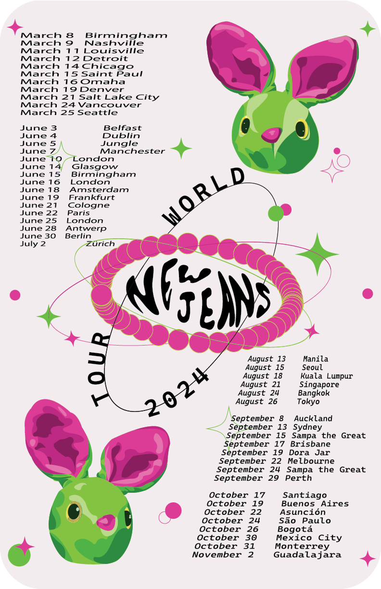
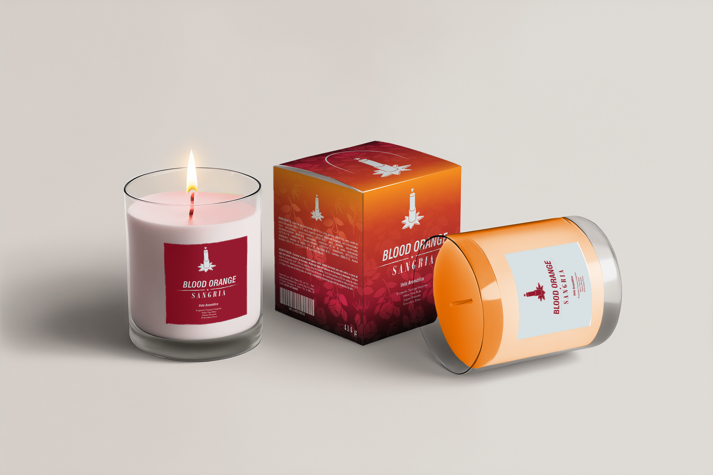

Poster para Tour
Poster realizado con una audiencia joven y femenina en mente. El objetivo era crear gráficos que funcionaran bien en cualquier medio: impreso o en redes sociales, y que fuera tan atractivo como anuncio o como merchandising del artista. Todo fue dibujado a mano (o mouse) en Illustrator. Trabajamos con un cronograma de entrega de dos semanas, en el cual se incluyeron el archivo digital y muestras impresas en papel couche y bond.
Programas usados: Illustrator.
Ver ->
Merch Move UNITEC
Diseños hechos para ser usados, como parte de la promoción de una app móvil. Ambos hechos en Illustrator y preparados para la producción. Vinil textil, suajes y corte con plotter para la tela negra, y sublimación para la tela blanca. Se trabajó en tres semanas; entregamos archivos PNG como referencia y 150 playeras de cada color.
Programas usados: Illustrator y Photoshop.
Ver ->
Packaging
Trabajamos con las leyes de empaque y etiquetado de México. Toda la información legalmente requerida está ahí, pero también buscamos que el empaque sea atractivo y la información fácil de leer. El brief: atraer a jóvenes adultos con interés por lo gótico. Disposición limpia, estética oscura y requerimientos legales, todo considerado. Se trabajó en una semana y se entregó el archivo PNG y .ai para imprenta, así como un dummy en cartoncillo.
Programas usados: Illustrator y Photoshop.
Ver ->